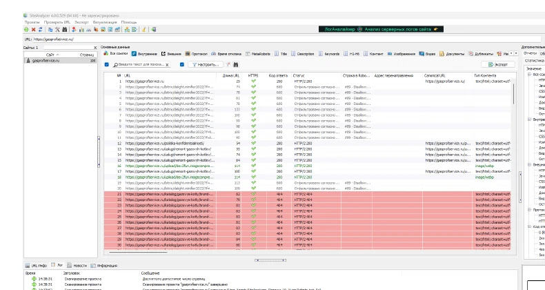
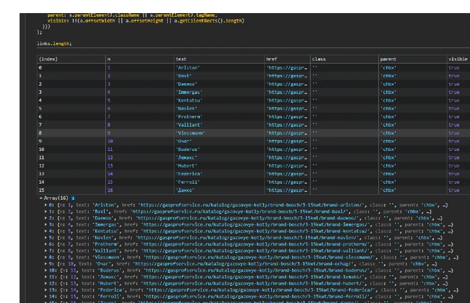
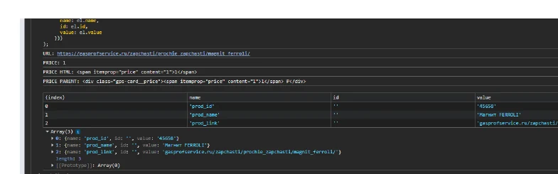
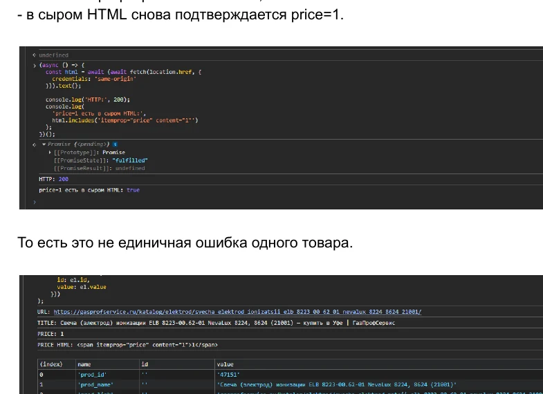
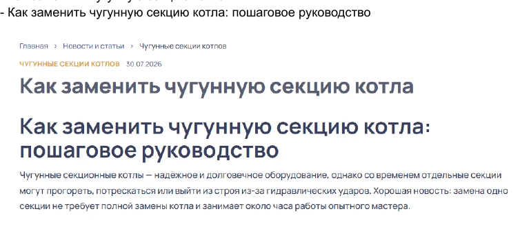
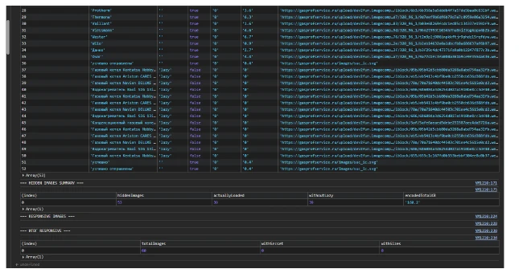
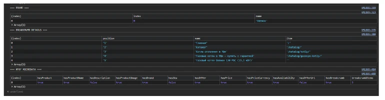
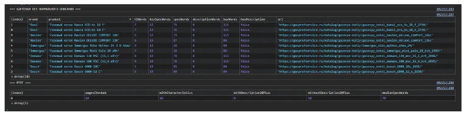

Это независимый SEO-аудит в формате образца работы по публичной части GasProfService, выполненный 24.09.2026. SiteAnalyzer помог найти кандидатов на проблемы; выводы затем проверялись вручную. Ниже описаны наблюдения на дату аудита и рекомендации. Подтверждения их внедрения и результатов после внедрения нет.
Задача
Провести независимый SEO-аудит публичной части сайта и отделить реальные технические проблемы от ложных срабатываний автоматических инструментов. Клиентский бриф и целевые бизнес-показатели для этой работы не заявляются.
Методика
SiteAnalyzer использовался для первичного поиска кандидатов. Затем проверялись действующие страницы, видимый интерфейс, DOM и исходный HTML. В зависимости от вопроса сверялись коды HTTP-ответов, robots.txt, карта сайта, теги canonical и микроразметка Schema.org. Для товарных карточек применялись контрольные выборки. Сигнал краулера сам по себе не считался подтверждённой ошибкой: для каждого выбранного вывода важны ручная проверка, дата и граница наблюдения.
Что проверялось
Аудит охватывал внутренние ссылки и фильтры каталога, отдельные товарные карточки и сценарий покупки, структуру статей, изображения и загрузку главной, товарную разметку и описательный контент. Это выборочные проверки публичных URL, а не утверждение о ручном обследовании каждой страницы сайта. Семантическое исследование сюда не включено.
Ключевые находки
1. Фильтр создавал внутренние ссылки на 404
В проверенном состоянии фильтра газовых котлов SiteAnalyzer обнаружил 16 целевых URL с HTTP 404. При ручной проверке именно этой страницы в DOM нашлись 16 видимых ссылок на соответствующие сочетания брендов. Их адреса сохраняли сегмент brand-bosch и добавляли ещё один brand-*. Для сравнения проверено обычное состояние фильтра с Baxi: ссылки там содержали один сегмент бренда.
Таким образом, ошибочные адреса были не только в выгрузке краулера: проверенная страница действительно предлагала их как внутренние переходы. Это мешало переключению бренда и направляло обход на 404. Рекомендация - исправить формирование адреса при смене бренда, сохраняя остальные выбранные параметры, а затем повторно проверить ссылки и ответы сервера. Набор ручных редиректов не устранил бы источник ссылок. Точный серверный участок генерации адресов не установлен; вывод не распространяется автоматически на все комбинации фильтров.


2. Цена 1 ₽ передавалась как цена товара
На двух разных проверенных товарах с разными prod_id значение 1 ₽ присутствовало уже в исходном HTML, в том числе как itemprop="price" content="1" в микроразметке Product. Это не было значением, появившимся только после выполнения JavaScript. В отдельно проверенном контрольном состоянии «Цена по запросу» itemprop="price" отсутствовал: сайт различал отсутствие публичной цены и числовую цену 1.
При этом действия «В корзину» и «Купить в один клик» в проверенном сценарии открывали форму заявки или обратного звонка. Числовая цена и привычные кнопки покупки создавали другое ожидание, чем фактическое действие. Сначала нужно установить источник значения 1 и реальный коммерческий статус товаров, затем согласовать видимую цену, микроразметку и кнопки со сценарием заявки или покупки. Причина на стороне данных или сервера, как и правильная цена этих товаров, не установлена. Наблюдение по двум карточкам не доказывает ошибку у каждого товара с ценой 1 ₽.


3. Два видимых H1 на статьях
Вручную проверены четыре статьи как минимум из двух тематических подразделов. На каждой оказалось по два видимых H1 с близким смыслом: первый выводился шаблоном страницы, второй находился внутри текста статьи. На одном из примеров повтор был подтверждён по видимой странице и DOM, включая расположение обоих заголовков.
Повтор затрудняет чтение и делает структуру материала менее ясной. Само наличие двух H1 не означает автоматического штрафа поисковой системы. Рекомендация - оставить один главный H1, а отличающуюся по смыслу внутреннюю тему при необходимости оформить H2. Вывод относится к четырём изученным статьям и не утверждает, что такая структура есть во всём разделе.

4. Неоптимальная загрузка изображений
При одной проверенной загрузке главной страницы LCP-изображение показывалось примерно в размере 302 × 199 CSS px при DPR 1, а загруженный исходник имел размер 1545 × 1018 px и весил около 191 KB. В DOM ни у одного из 60 проверенных IMG не было srcset или sizes. Из 53 скрытых IMG сразу загрузились 39; их суммарный объём загруженных данных составлял около 160,2 KB. Это указывает на возможность точнее подбирать размер загружаемых изображений и откладывать действительно ненужные на первом экране ресурсы.
При этом измеренный в том же тесте LCP был около 1228 ms, а CLS - около 0,0014. Эти значения не свидетельствуют о неудовлетворительных основных веб-показателях. Они относятся к конкретной загрузке, а не ко всем устройствам и пользователям. Рекомендация - подготовить подходящие растровые варианты и настроить srcset/sizes, а отложенную загрузку применять к изображениям вне первого экрана. Подтверждённое LCP-изображение не следует загружать отложенно.

5. Микроразметка Product без поля description
Проверена контрольная выборка из десяти товарных карточек: по две Baxi, Bosch, Immergas, Daewoo и Navien. Микроразметка Product присутствовала на 10/10, как и поля name, image и brand. Однако itemprop="description" отсутствовал во всех десяти блоках разметки Product. Главный подтверждённый вывод здесь - неполное описание конкретного товара в существующей разметке, а не отсутствие самой микроразметки Product.
Фактическое описание модели следует сначала добавить в видимый контент, затем согласовать с ним поле description в микроразметке Product. Это не обещает гарантированного расширенного результата поиска и не означает, что обычная индексация страниц была заблокирована. Отдельная проверка пяти карточек без поля price в разметке показала, что на них также не было видимой публичной цены. Поэтому отсутствие price в этих пяти случаях не записано как подтверждённая рассинхронизация разметки и страницы. Результат 10/10 относится к выборке, не ко всему каталогу.

6. Характеристики были, описательного контента - нет
На тех же десяти проверенных карточках характеристики присутствовали на каждой странице. Их медианный объём в финальном структурном разборе составлял 78 слов. Однако отдельного содержательного описания конкретной модели не найдено ни на одной из десяти карточек. Характеристики отвечали на технические вопросы, но не раскрывали применение и особенности модели отдельным текстом.
Первоначальная гипотеза о крайне малом объёме текста была отклонена после уточнения метода: ранний подсчёт не учитывал характеристики, расположенные в div и span. Поэтому эти карточки нельзя называть пустыми. Для приоритетных товаров рекомендация - подготовить проверяемые описания конкретных моделей и согласовать их с микроразметкой Product. Вывод об отсутствии отдельного описания относится только к десяти проверенным карточкам, а не автоматически ко всему ассортименту.

Что дополнительно проверялось
Контрольные проверки нужны, чтобы автоматический сигнал или необычная структура не превращались в находку без подтверждения.
- Канонический URL и индексируемость. В выборке из десяти товарных карточек от 24.09.2026 HTTP 200 получили 10/10; ровно один тег canonical, указывающий на саму страницу, был на 10/10; канонический URL отвечал HTTP 200 на 10/10.
noindexне обнаружен ни на одной карточке, как и блокировка этих URL для Yandex вrobots.txt. В этой выборке проблема не подтвердилась; вывод не описывает все URL сайта. - BreadcrumbList. На тех же десяти карточках разметка присутствовала на 10/10: по пять ListItem с последовательными позициями и именами. Поле
itemотсутствовало только у последнего элемента. Само по себе это не было признано подтверждённой SEO-ошибкой. Другие варианты разметки и текущее состояние сайта этим контролем не охвачены.
Приоритеты
High Ломают обход и сценарий покупки
- Внутренние ссылки фильтра на 404
- Цена 1 ₽, не совпадающая со сценарием заявки
Medium Структура, изображения и контент
- Два видимых H1 на статьях
- Загрузка изображений без
srcset/sizes - Product без поля
description - Карточки без описательного текста
Это редакционная группировка рекомендаций по данному аудиту, а не абсолютная оценка бизнес-эффекта или прогноз роста показателей.
Рекомендации
- Исправить генерацию URL фильтра. При переключении бренда сохранять остальные параметры и повторно проверить коды ответов целевых URL.
- Разобраться с ценой 1 ₽. Установить источник значения и привести цену, микроразметку и действие кнопок к фактическому предложению.
- Оставить один H1 в статьях. Внутреннюю тему с другим смыслом оформить H2.
- Настроить изображения. Добавить подходящие варианты через
srcset/sizes, откладывать только ресурсы вне первого экрана. - Дополнить микроразметку Product. Добавить описание, совпадающее с видимым текстом.
- Написать описания товаров. Начать с приоритетных моделей, на основе проверяемой информации.
Это предложения по итогам аудита, а не отчёт о выполненных изменениях.
Ограничения
Аудит проводился по публичной части сайта без доступа к CMS, админке или серверу. Поэтому точные причины некоторых серверных значений, в частности цены 1 ₽ и формирования ссылок фильтра, не установлены. Выводы по двум товарам, четырём статьям и десяти карточкам нельзя автоматически переносить на весь сайт. Измерения изображений и загрузки относятся к одному тесту с указанными условиями. Наблюдения датированы 24.09.2026 и не гарантируют того же состояния страниц сегодня. Подтверждений внедрения рекомендаций нет, измерений после внедрения не проводилось.
Статус работы
Статус: Образец работы. Аудит и рекомендации подготовлены. Внедрение рекомендаций и результаты после него не подтверждены, поэтому здесь нет заявлений о росте трафика, позиций, продаж, конверсий или иных неподтверждённых результатах.